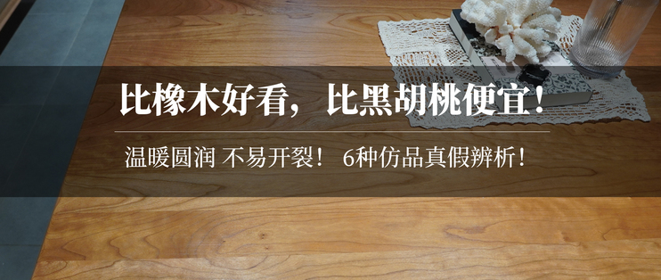

排行榜
文章



红木是豆科紫檀属（pterocarpus）的植物

红木是豆科紫檀属（pterocarpus）的植物，也是中国高端、名贵家具用材的统称，主要产于印度。
红木是豆科紫檀属（pterocarpus）的植物，也是中国高端、名贵家具用材的统称，主要产于印度。

红木是豆科紫檀属（pterocarpus）的植物，也是中国高端、名贵家具用材的统称，主要产于印度。

红木是豆科紫檀属（pterocarpus）的植物，也是中国高端、名贵家具用材的统称，主要产于印度。
红木是豆科紫檀属（pterocarpus）的植物，也是中国高端、名贵家具用材的统称，主要产于印度。红木是豆科紫檀属（pterocarpus）的植物，也是中国高端、名贵家具用材的统称，主要产于印度。